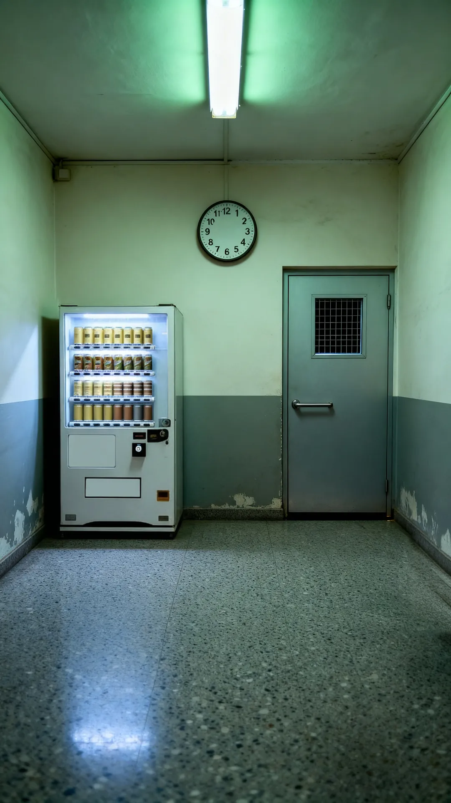

아래 막대의 [종이] · [수첩]을 누른다 — 게임 화면처럼. 종이는 옆으로 끌면 뒤집힌다.
고정 구조: 공간 탭 × 칸 넷(방의 사실 A~E 고정 순서 · 앞사람 흔적 펜 고정 순서 · 의심한 줄 · 본 죽음). 아직 못 읽은 자리는 비워 둔다(이름은 안 보인다 — 어디를 볼지 알려 주지 않게). 새로 적힌 것만 잠깐 「새」. 「새로 적기」 = 다음 것 하나를 적는다(confirm 진동 + 연필 소리). 판 A 대합실 「본 죽음」은 서장에 본 죽음 줄이 아직 없어 「놓친 것」 줄로 채웠다.

자판기 = 쇠 소리 · 시계 = 유리 소리 · 문 = 둔탁한 소리. 누른 자리에 빛이 번지고 사물이 잠깐 눌린다(0.22초) — 그 뒤 확대가 열린다(여기서는 글로만). 진동 tap.